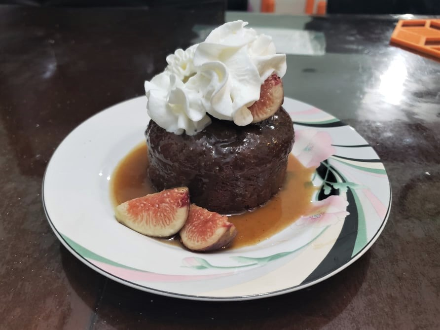

Figgy Pudding

Ingredients:
Figgy Pudding:
- 1/2 cup Dried figs
- 1 1/2 cup Dried dates
- 2 cups Water
- 1 tsp Baking soda
- 7 tbsp Unsalted butter
- 1 cup Sugar
- 2 Eggs
- 2 1/2 cups Flour
- 3 3/4 tsp Baking powder
- 5/8 tsp Salt
- 75 g Dark chocolate, grated
Sauce:
- 2 cups Heavy cream
- 2 cups Brown sugar
- 14 tbsp Unsalted butter
Instructions:
- Preheat the oven to 350 degrees Fahrenheit.
- Add the dried dates, figs, and water to a saucepan and bring to a boil over medium heat. Once it boils, remove from heat and stir in the baking soda. Let cool for 5 minutes and then puree in a blender.
- Cream the butter and sugar in a large bowl with a hand mixer. Add the eggs and beat well. Fold in the flour, baking powder, salt, fig and date mixture, and chocolate until well combined.
- Put the mixture into 12 buttered, 1-cup individual ramekins, filling halfway or slightly under. Put in the oven and bake for about 20 - 30 minutes, or until a toothpick comes out clean.
- While the figgy pudding bakes, prepare the sauce. Combine the heavy cream and brown sugar in a saucepan and bring to a boil. Reduce heat and simmer for 5 minutes. Then mix in the butter.
- When ready, remove the ramekins from the oven. Let cool for 10 minutes, then either remove the figgy pudding and serve on a plate, or serve in the ramekin. Optionally, cut a small cross on the top of the figgy pudding. Slowly pour the sauce over the top or into the cross of the figgy pudding. Optionally top with fresh figs and whip cream or vanilla ice cream. Serve warm.